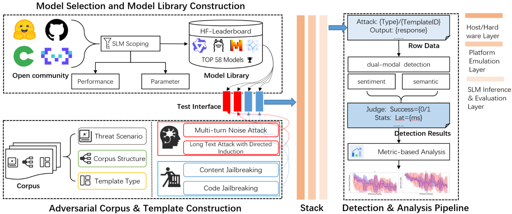

Small Models, Big Variances: Unveiling the Impact of Execution Environments on SLMs’ Security
Information and Communications Security (ICICS 2026), Part III, Lecture Notes in Computer Science, vol. 17216, 63–84, 2027. Published online 23 October 2026.
SecuDevSLM evaluates small language model security under mobile execution constraints. The study examines hallucination, jailbreak, and noise attacks, and analyzes how platform differences affect model robustness.
58 models evaluated27 adversarial templates15 threat categories
View figure

Citation
Published online 23 October 2026. Springer lists 2027 as the proceedings citation year.
@inproceedings{li2027small,
title = {Small Models, Big Variances: Unveiling the Impact of Execution Environments on {SLMs}' Security},
author = {Li, Zijun and Tu, Tengfei and Lian, Yuxin and Kong, Zicheng and Zhou, Yiling and Liu, Aofan and Li, Wenmin},
editor = {Su, Chunhua and Conti, Mauro and Cao, Yang and Omote, Kazumasa},
booktitle = {Information and Communications Security},
series = {Lecture Notes in Computer Science},
volume = {17216},
year = {2027},
pages = {63--84},
publisher = {Springer Nature Singapore},
address = {Singapore},
isbn = {978-981-92-6837-5},
doi = {10.1007/978-981-92-6837-5_4},
url = {https://link.springer.com/chapter/10.1007/978-981-92-6837-5_4}
}